How to design Primers for PCR
GeneWarrior uses Primer3 for primer design. See here
for more information about this software.
See also the YouTube tutorial.
- Enter your target DNA sequence (the sequence where you want to design primers on) into the text box and click
the button "Add". Your new entry is added.
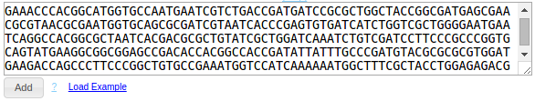
If you don't have any sequences and just want to try out GeneWarrior's functionality, you can import some
example sequences by clicking on "Load Examples", next to the "Add"-Button.
For more details regarding data entry and acceptable formats see Help>Sequence
Import
- Select the entry that you want to use as PCR target by clicking on them. Selected entries change the background
color.
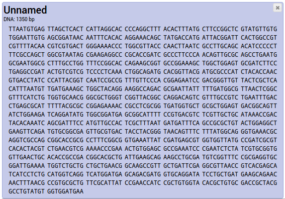
To deselect an entry, click on it again; the background changes to white again.
For more details about selecting entries see Help>Selecting entries
Help>Renaming entries describes how to change an entry name.
- After selecting the entry, choose the appropriate command in the tool bar: "PCR > Primer
design".
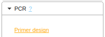
The primer design window opens.
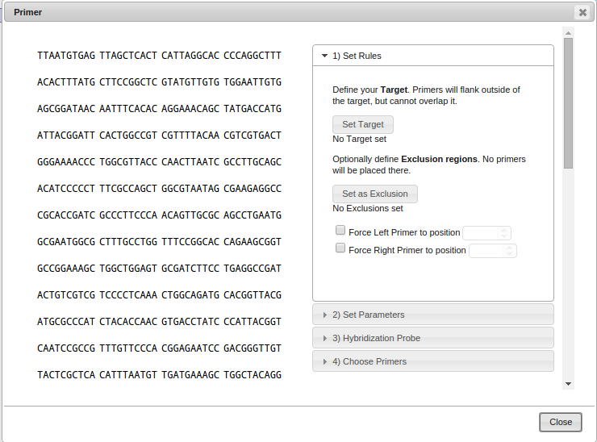
-
Choose a PCR target (the region around which the primers should be placed) by selecting a region using your
mouse
and clicking on "Set Target".
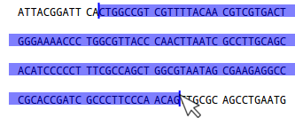 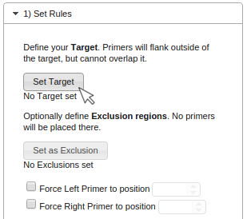
The selected Target will be displayed as follows:
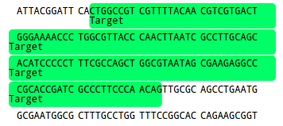
Optional rules:
Exclusion
If you want to exclude regions from designing a primer on it, you can define them as Exclusions by selecting
them
using your mouse and clicking "Set as Exclusion". This is useful from preventing primers to anneal to
low quality sequences or repetitive regions.
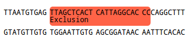
Force Primer position
To force the left, right or both primers to start at a specified position, use the "Force Primer to
position"-option.
The position will be indicated as a red arrow. This of course limits the software to only vary the
length of the primer to satisfy your further constraints such as GC-content and melting temperature.
If you specify both the left and right primer, no Target is needed.
The left primer is forced to start at position 205.
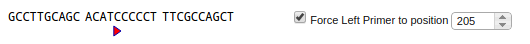
-
After selecting your target (and Exclusions, if necessary), click on the next tab "2) Set
Parameters".
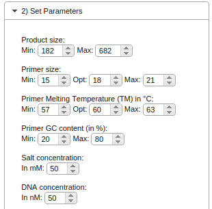
The parameters are preset for usual PCR conditions. If necessary, you can change the parameters to suit your
needs.
The product size describes the length of the final PCR product and gives the software a constraint on
where to look for
suitable primers. If you set the range of the product size too narrow, chances are that no primers can be found
which
also fulfill the other constraints (such as melting temperature and GC content).
The next three setting (primer size, primer melting temperature and primer GC content)
describe the desired properties
of the primers themselves. The narrower the range of constraints, the harder it will be for the software to find
suitable
primers.
Salt concentration and DNA concentration describe the properties of the PCR reaction itself and
are used
to compute the melting temperatures.
-
If you want to design a hybridization probe in addition to the PCR primers (to be used in qPCR/Real-time PCR)
you can choose the option
"Create Hybridization Probe". The parameters are the same as above, but are used only for the design of
the probe.
-
Click on the last tab "Choose Primers" and the button "Calculate Primers".

GeneWarrior will now try to design primers based on your entered parameters. If the parameters are too strict
an error message will explain where it failed. Try using less strict parameters, such as a broader range for
the product size, melting temperature and GC content.
If everything is okay, upt to five primer pair candidates will be presented. You can choose and inspect the
candidates by using the dropdown box. The details such as primer sequence, position, melting temperature are
displayed below the dropdown box. The primer positions are visualized in the sequence itself.
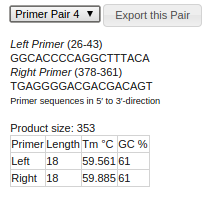
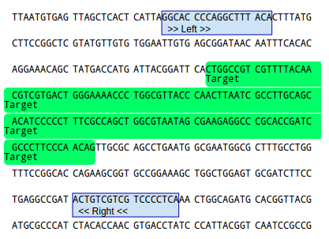
If you're not happy with the primer positions, try choosing a different product size parameter or
setting/removing
exclusion regions.
-
If you have successfully chosen a primer pair candidate, click on the button "Export this pair" next to
the dropdown box. The primer design window will close and export the PCR details, the primer sequences and the
resulting PCR product into your project.
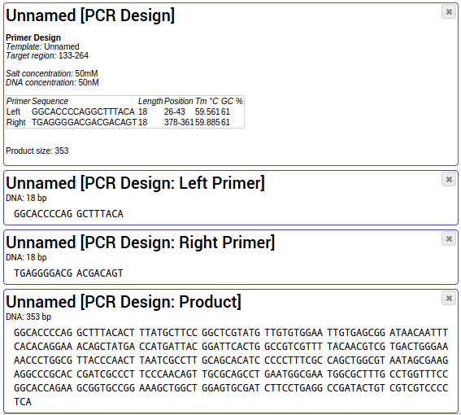
You can use the tool "Share & Export > Share project" to share your PCR design with your
colleagues.
Back to Documentation index